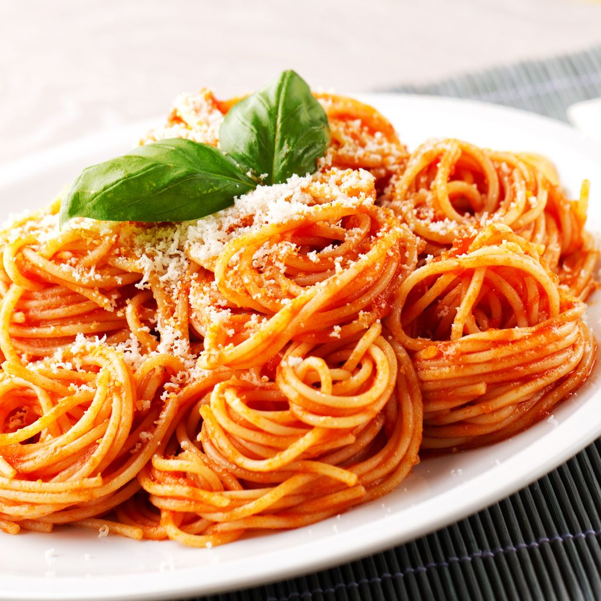

Spaghetti

Description
Les spaghetti ou spaghettis sont un plat de pâtes longues, fines et cylindriques, typique de la cuisine italienne.
Ingredients
- 500 g de spaghetti.
- 100 g de concentré de tomate.
- 2 c. à soupe d'huile d'olive.
- 4 petits oignons.
- 1 gousse d'ail.
- 70 g de parmesan.
- 1 pincée de persil.
- 1 pincée de piment doux.
- Use a large pot
- Load up the pot with lots of water
- Salt the water
- Bring the water to a full, rolling boil
- Stir to keep the pasta from sticking
- Save a scoop of pasta water
- Drain, toss with sauce, and serve hot